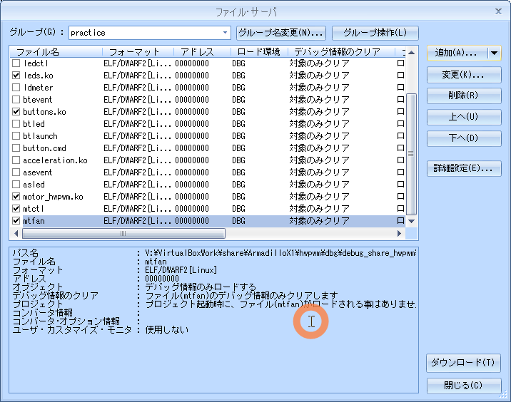

05.motor
目的
組込みアプリケーション開発 05.motor
構成データ
/media/sf_ArmadilloX1/hwpwm/work/R06_2024/Apllication_debug/text/practice ディレクトリ
･･･/share/ArmadilloX1/hwpwm/work/R06_2024/Application_debug/text/practice/ の構成
user@1204PC-Z490M:/mnt/v/VirtualBoxWork/share/ArmadilloX1/hwpwm/work/R06_2024/Application_debug/text/practice$ tree -aF -L 3
./
├── 05.motor/
│ ├── drivers/
│ │ ├── buttons/
│ │ ├── leds/
│ │ └── motor/
│ │ ├── Makefile* <───── ドライバ用Makefile
│ │ └── motor_hwpwm.c* <───── ドライバソース
│ ├── Makefile* <───── デバイス制御用Makefile
│ ├── mtctl.c* <───── 例題 デバイス制御用ソース
│ ├── mtfan2.c* <───── 課題2 デバイス制御用ソース
│ └── mtfan.c* <───── 課題1 デバイス制御用ソース
モーター制御
デバイス仕様
DCモーターは、ハードウェアPMWによる制御（ソフトウェアPWMよりも滑らか）
モーター: RE 140RA 2270（マブチモーター）
-
モーターの駆動電圧:約 2.5V（max 1.5A）
-
モーターをフル回転（ MOT_PWM duty100%duty100%）の状態で 起動すると電源、及び周辺回路に悪影響を与える可能性あり
-
起動時は多大な突入電流 2.5A 程度流れる
-
モータを起動する時は、 PWM 制御によってモータの回転速度を 徐々に上げていく
-
起動時の突入電流を 1A 以下（ 700mA 程度 ）に抑えるには、500mS 程度の時間をかけ、徐々に duty が 100% になるように制御する
-
通常動作時 に PWM 制御 によって duty を 100% 以下にすると、モータの消費電流が増加
-
duty が 70% 程度になると、消費電流は duty100% の時の倍近くにまで増加
-
長時間モータを連続駆動すると 、モータ用電源IC U7 BA00DD0WHFP と ドライバー IC U6 :TB65 52 FNG が発熱して高温状態になる
-
連続駆動する時は、 duty100% で使用することを推奨します 。
デバイスドライバ
ソース
motor_hwpwm.c
05.motor/drivers/motor_hwpwm.c
#include <linux/init.h>
#include <linux/module.h>
#include <linux/platform_device.h>
#include <linux/fs.h>
#include <linux/pwm.h>
#include <asm/armadilloX1-ext-cpld.h>
// モータ動作モードのマクロ
#define MOT_PWM 0x01
#define MOT_CW 0x02
#define MOT_CCW 0x04
#define MOT_STBY 0x08
#define MODE_BREAK (MOT_CW|MOT_CCW|MOT_STBY)
#define MODE_CCW (MOT_CCW|MOT_PWM|MOT_STBY)
#define MODE_CCW_BR (MOT_CCW|MOT_STBY)
#define MODE_CW (MOT_CW|MOT_PWM|MOT_STBY)
#define MODE_CW_BR (MOT_CW|MOT_STBY)
#define MODE_STOP (MOT_STBY)
#define MODE_STBY (0)
#define MAX_ROTATION 100
#define MIN_ROTATION -100
#define PWM_PERIOD 500000 // PWMの1周期の時間(単位：ns)
// 設定された値を保持する変数
static int set_duty = 0;
// PWMデバイス
static struct pwm_device *pwm;
// 属性ファイルから現在設定されている値を読み出す関数(motor_rotation_show)
static ssize_t motor_rotation_show(struct device *dev, struct device_attribute *attr, char *buf)
{
return sprintf(buf, "%d\n", set_duty);
}
// 属性ファイルへの書き込み関数
static ssize_t motor_rotation_store(struct device *dev, struct device_attribute *attr, const char *buf, size_t count)
{
int ret;
long val;
unsigned int cycle;
struct pwm_state state;
// バッファからデータを取り出し、数値に変換する。
ret = kstrtol(buf, 10, &val);
if (ret)
return ret;
// 0以外が指定された場合の処理
if (val != 0) {
// 現在のPWMデバイスの設定を取得する。
pwm_get_state(pwm, &state);
// PWMを設定変更前に停止状態にする。
state.enabled = 0;
// PWMデバイスに設定を適用する。
ret = pwm_apply_state(pwm, &state);
if (ret)
return ret;
// 正転の場合の処理(正の値を設定したとき)
if (val > 0) {
if (val > MAX_ROTATION) {
val = MAX_ROTATION;
}
// 指定されたデューティ比にするためのパルス信号のHigh時間を計算する。
val = ((val / 10) * 10);
cycle = (PWM_PERIOD * val) / 100;
// 現在のPWMデバイスの設定を取得する。
pwm_get_state(pwm, &state);
// PWMの1周期あたりのHigh時間を設定する。
state.duty_cycle = cycle;
// PWMを動作状態にする。
state.enabled = 1;
// PWMデバイスに設定を適用する。
ret = pwm_apply_state(pwm, &state);
if (ret)
return ret;
// モータ動作モードをCWにセットする。
cpld_write(CPLD_WRITE_MOT, MODE_CW);
// 反転の場合の処理(負の値を設定したとき)
} else {
if (val < MIN_ROTATION) {
val = MIN_ROTATION;
}
// 指定されたデューティ比にするためのパルス信号のHigh時間を計算する。
val = ((val / 10) * 10);
cycle = (PWM_PERIOD * -val) / 100;
// 現在のPWMデバイスの設定を取得する。
pwm_get_state(pwm, &state);
// PWMの1周期あたりのHigh時間を設定する。
state.duty_cycle = cycle;
// PWMを動作状態にする。
state.enabled = 1;
// PWMデバイスに設定を適用する。
ret = pwm_apply_state(pwm, &state);
if (ret)
return ret;
// モータ動作モードをCCWにセットする。
cpld_write(CPLD_WRITE_MOT, MODE_CCW);
}
// 0が指定された場合の処理
} else {
// モータ動作モードをストップにセットする。
cpld_write(CPLD_WRITE_MOT, MODE_STOP);
// 現在のPWMデバイスの設定を取得する。
pwm_get_state(pwm, &state);
// PWMを停止状態にする。
state.enabled = 0;
// PWMデバイスに設定を適用する。
ret = pwm_apply_state(pwm, &state);
if (ret)
return ret;
}
// 設定された値を保持する。
set_duty = val;
return count;
}
// motor_rotationの最大値を返す関数(motor_max_rotation_show)
static ssize_t motor_max_rotation_show(struct device *dev, struct device_attribute *attr, char *buf)
{
return sprintf(buf, "%d\n", MAX_ROTATION);
}
// motor_rotationの最小値を返す関数(motor_min_rotation_show)
static ssize_t motor_min_rotation_show(struct device *dev, struct device_attribute *attr, char *buf)
{
return sprintf(buf, "%d\n", MIN_ROTATION);
}
// デバイス属性構造体
static DEVICE_ATTR_RW(motor_rotation);
static DEVICE_ATTR_RO(motor_max_rotation);
static DEVICE_ATTR_RO(motor_min_rotation);
// モータ デバイス属性グループ構造体
static struct attribute *motor_class_attrs[] = {
&dev_attr_motor_rotation.attr,
&dev_attr_motor_max_rotation.attr,
&dev_attr_motor_min_rotation.attr,
NULL,
};
ATTRIBUTE_GROUPS(motor_class);
// モータクラスデバイス構造体
static struct class motor_class = {
.owner = THIS_MODULE,
.name = "motor",
.dev_groups = motor_class_groups,
};
// probe関数(motor_probe)
static int motor_probe(struct platform_device *pdev)
{
struct device *dev;
struct pwm_state state;
int ret;
// 属性ファイルを作成
// /sys/class/motor/配下にファイルを作成し、/sys/class/motor/motor0/motor_rotationに
// 値を書き込むとデバイス書き込み関数(motor_rotation_store)が呼び出されるように
// 作成します。
dev = device_create(&motor_class, NULL, 0, NULL, "motor0");
if (IS_ERR(dev)){
dev_err(&pdev->dev, KERN_ERR "failed to create device.\n");
return PTR_ERR(dev);
}
// 使用するPWMデバイスの情報を取得する。
pwm = pwm_request(1, "Hardware-PWM Motor");
if (IS_ERR(pwm)) {
dev_err(&pdev->dev, KERN_ERR "failed to request PWM device.\n");
device_destroy(&motor_class, 0);
return PTR_ERR(pwm);
}
// モータ動作モードをストップにセットする。
cpld_write(CPLD_WRITE_MOT, MODE_STOP);
// 現在のPWMデバイスの設定を取得する。
pwm_get_state(pwm, &state);
// PWMの1周期の時間を設定する。
state.period = PWM_PERIOD;
// PWMを停止状態にする。
state.enabled = 0;
// PWMデバイスに設定を適用する。
ret = pwm_apply_state(pwm, &state);
if (ret) {
dev_err(&pdev->dev, KERN_ERR "failed to apply state PWM.\n");
pwm_free(pwm);
device_destroy(&motor_class, 0);
return ret;
}
return 0;
}
// remove関数(motor_remove)
static int motor_remove(struct platform_device *pdev)
{
struct pwm_state state;
// モータ動作モードをスタンバイにセットする。
cpld_write(CPLD_WRITE_MOT, MODE_STBY);
// 現在のPWMデバイスの設定を取得する。
pwm_get_state(pwm, &state);
// PWMを停止状態にする。
state.enabled = 0;
// PWMデバイスに設定を適用する。
pwm_apply_state(pwm, &state);
// PWMデバイスを解放する。
pwm_free(pwm);
// モータクラスデバイス構造体を解除します。(device_destroy)
device_destroy(&motor_class, 0);
return 0;
}
// プラットフォームドライバ構造体の宣言
// ドライバにprobe関数とremove関数、デバイスドライバ構造体を設定します。
static struct platform_driver motor_driver = {
.probe = motor_probe,
.remove = motor_remove,
.driver = {
.name = "armadillo-x1-extension-motor",
.owner = THIS_MODULE,
},
};
static struct platform_device *pdev;
// 初期化関数(motor_init)
static int __init motor_init(void)
{
int ret = 0;
// モータクラスデバイスを登録します。(class_register)
// /sys/class/motor/配下にファイルを作成し、/sys/class/motor/motor0/motor_rotationに
// 値を書き込むとデバイス書き込み関数(motor_rotation_store)が呼び出されるように
// 登録します。
ret = class_register(&motor_class);
if (ret)
goto err1;
// プラットフォームドライバを登録します。(platform_driver_register)
// 登録したプラットフォームデバイスのリソース情報を取得し、
// プラットフォームドライバとして、probe関数とremove関数を登録します。
ret = platform_driver_register(&motor_driver);
if (ret)
goto err2;
// プラットフォームデバイスを登録します(platform_device_register_simple)
// プラットフォーム依存のデバイス情報を登録します。
pdev = platform_device_register_simple("armadillo-x1-extension-motor", -1, NULL, 0);
if (!pdev)
goto err3;
return 0;
err3: platform_driver_unregister(&motor_driver);
err2: class_unregister(&motor_class);
err1:
return ret;
}
// 終了関数(motor_exit)
static void __exit motor_exit(void)
{
// プラットフォームデバイスを解除します。(platform_device_unregister)
platform_device_unregister(pdev);
// プラットフォームドライバを解除します。(platform_driver_unregister)
platform_driver_unregister(&motor_driver);
// モータクラスデバイスを解除します。(class_unregister)
class_unregister(&motor_class);
}
// 初期化の際に、初期化関数が呼ばれるように登録します。
module_init(motor_init);
// 終了する際に、終了関数が呼ばれるように登録します。
module_exit(motor_exit);
// モジュールについての説明
MODULE_DESCRIPTION("motor driver");
// MODULE_LICENSEは"GPL"とします。
MODULE_LICENSE("GPL");
Makefile
05.motor/drivers/motor/Makefile
KERNELDIR = /home/atmark/linux-4.9-x1-at27_dbg
ARCH = arm
PREFIX = arm-linux-gnueabihf-
MOD_PATH = /work/linux/nfsroot
EXTRA_CFLAGS += -gdwarf-2 -O0
obj-m := motor_hwpwm.o
modules:
$(MAKE) -C $(KERNELDIR) M=`pwd` ARCH=$(ARCH) CROSS_COMPILE=$(PREFIX) modules
modules_install:
$(MAKE) -C $(KERNELDIR) M=`pwd` ARCH=$(ARCH) INSTALL_MOD_PATH=$(MOD_PATH) modules_install
myinstall:
cp -p *.ko /media/sf_ArmadilloX1/hwpwm/dbg/debug_share_hwpwm/R06_2024/04_practice
cp -p *.c /media/sf_ArmadilloX1/hwpwm/dbg/debug_share_hwpwm/R06_2024/04_practice
clean:
$(MAKE) -C $(KERNELDIR) M=`pwd` clean
動作確認
make clean
$ make clean
atmark@atde8:/media/sf_ArmadilloX1/hwpwm/work/R06_2024/Application_debug/text/practice-example/05.motor/drivers/motor$ make clean
make -C /home/atmark/linux-4.9-x1-at27_dbg M=`pwd` clean
make[1]: ディレクトリ '/home/atmark/linux-4.9-x1-at27_dbg' に入ります
CLEAN /media/sf_ArmadilloX1/hwpwm/work/R06_2024/Application_debug/text/practice-example/05.motor/drivers/motor/.tmp_versions
CLEAN /media/sf_ArmadilloX1/hwpwm/work/R06_2024/Application_debug/text/practice-example/05.motor/drivers/motor/Module.symvers
make[1]: ディレクトリ '/home/atmark/linux-4.9-x1-at27_dbg' から出ます
make modules
「make[2]: 警告: ファイル '/media/sf_ArmadilloX1/hwpwm/work/R06_2024/Application_debug/text/practice-example/02.led/drivers/leds/leds.o' の修正時刻 20 は未来の時刻です」と表示された場合は chrony を ATDE8 と ArmadilloX1 にインストールすると解決する
$ make modules
atmark@atde8:/media/sf_ArmadilloX1/hwpwm/work/R06_2024/Application_debug/text/practice-example/05.motor/drivers/motor$ make modules
make -C /home/atmark/linux-4.9-x1-at27_dbg M=`pwd` ARCH=arm CROSS_COMPILE=arm-linux-gnueabihf- modules
make[1]: ディレクトリ '/home/atmark/linux-4.9-x1-at27_dbg' に入ります
CC [M] /media/sf_ArmadilloX1/hwpwm/work/R06_2024/Application_debug/text/practice-example/05.motor/drivers/motor/motor_hwpwm.o
Building modules, stage 2.
MODPOST 1 modules
CC /media/sf_ArmadilloX1/hwpwm/work/R06_2024/Application_debug/text/practice-example/05.motor/drivers/motor/motor_hwpwm.mod.o
LD [M] /media/sf_ArmadilloX1/hwpwm/work/R06_2024/Application_debug/text/practice-example/05.motor/drivers/motor/motor_hwpwm.ko
make[1]: ディレクトリ '/home/atmark/linux-4.9-x1-at27_dbg' から出ます
sudo make modules_install
$ sudo make modules_install
atmark@atde8:/media/sf_ArmadilloX1/hwpwm/work/R06_2024/Application_debug/text/practice-example/05.motor/drivers/motor$ sudo make modules_install
[sudo] atmark のパスワード:
make -C /home/atmark/linux-4.9-x1-at27_dbg M=`pwd` ARCH=arm INSTALL_MOD_PATH=/work/linux/nfsroot modules_install
make[1]: ディレクトリ '/home/atmark/linux-4.9-x1-at27_dbg' に入ります
INSTALL /media/sf_ArmadilloX1/hwpwm/work/R06_2024/Application_debug/text/practice-example/05.motor/drivers/motor/motor_hwpwm.ko
DEPMOD 4.9.133-at27
depmod: WARNING: could not open modules.order at /work/linux/nfsroot/lib/modules/4.9.133-at27: No such file or directory
depmod: WARNING: could not open modules.builtin at /work/linux/nfsroot/lib/modules/4.9.133-at27: No such file or directory
make[1]: ディレクトリ '/home/atmark/linux-4.9-x1-at27_dbg' から出ます
sudo make myinstall
$ sudo make myinstall
atmark@atde8:/media/sf_ArmadilloX1/hwpwm/work/R06_2024/Application_debug/text/practice-example/05.motor/drivers/motor$ sudo make myinstall
cp -p *.ko /media/sf_ArmadilloX1/hwpwm/dbg/debug_share_hwpwm/R06_2024/04_practice
cp -p *.c /media/sf_ArmadilloX1/hwpwm/dbg/debug_share_hwpwm/R06_2024/04_practice
cd
root@armadillo:/# cd /lib/modules/4.9.133-at27/extra/
root@armadillo:~# cd /lib/modules/4.9.133-at27/extra/
insmod
#insmod leds.ko, #insmod motor ko, #insmod buttons.ko
root@armadillo:/lib/modules/4.9.133-at27/extra# insmod motor_hwpwm.ko
root@armadillo:/lib/modules/4.9.133-at27/extra# insmod leds.ko
root@armadillo:/lib/modules/4.9.133-at27/extra# insmod buttons.ko
root@armadillo:/lib/modules/4.9.133-at27/extra# lsmod
Module Size Used by
buttons 3065 0
leds 2103 0
motor_hwpwm 4415 0
デバイスファイル
"/sys/class/motor/motor0/motor_rotation"
デバイスファイルに以下の値を書込むと回転
| mode | speed |
|---|---|
| CW | 1 ～ 100 |
| CCW | -1 ～-100 |
| STOP | 0 |
デバイスファイルによる回転制御
root@armadillo:/lib/modules/4.9.133-at27/extra# echo 100 > /sys/class/motor/motor0/motor_rotation
root@armadillo:/lib/modules/4.9.133-at27/extra# echo 0 > /sys/class/motor/motor0/motor_rotation
root@armadillo:/lib/modules/4.9.133-at27/extra#
DCモーターが回転しない場合、motor_hwpwm.c のソースを確認すること
実行している様子
motorデバイスファイルによるモータ制御を実行している動画
例題 mtctl
モーター制御コマンド
- 引数が指定されない時は モーター の回転状態を表示
- 引数を1つ指定すると モーター の回転状態を変更
ソース
mtctl.c
05.motor/mtctl.c
#include <stdio.h>
#include <fcntl.h>
#include <unistd.h>
#include <stdlib.h>
// モータ制御用ファイル
#define MOTOR_FILE "/sys/class/motor/motor0/motor_rotation"
#define DATALEN 16
int main(int argc, char *argv[])
{
int fd;
int rot;
char *p;
int ret, n;
char data[DATALEN];
// モータ制御用ファイルをオープンします。
fd = open(MOTOR_FILE, O_RDWR);
// オープンに失敗したら、main関数をエラー終了します。
if (fd < 0){
perror("open");
return 1;
}
switch(argc){
case 1:
// モータの回転状態を読み出します。
ret = read(fd, data, DATALEN);
// 読み出しに失敗したら、main関数をエラー終了します。
if (ret < 0){
perror("read");
return 1;
}
// モータの回転状態を表示します。
data[ret] = '\0';
printf("rotation: %s", data);
break;
case 2:
// 文字列を数値に変換します。
rot = strtol(argv[1], &p, 0);
// 変換に失敗したら、main関数をエラー終了します。
if (*p != '\0'){
fprintf(stderr, "invalid number\n");
return 2;
}
// 数値が範囲内でなければ、main関数をエラー終了します。
if (rot < -100 || rot > 100){
fprintf(stderr, "out of range\n");
return 2;
}
// 数値を文字列に変換します。
n = sprintf(data, "%d", rot);
// モータの状態変化を書き込みます。
ret = write(fd, data, n);
// 書き込みに失敗したら、main関数をエラー終了します。
if (ret < 0){
perror("write");
return 1;
}
break;
default:
// 引数の数が指定どおりでない場合、main関数をエラー終了します。
fprintf(stderr, "Usage: %s [rotation]\n", argv[0]);
return 2;
}
// モータ制御用ファイルをクローズします。
close(fd);
return 0;
}
Makefile
05.motor/Makefile
CC = arm-linux-gnueabihf-gcc
#TARGET = mtctl mtfan mtfan2
TARGET = mtctl
CFLAGS = -gdwarf-2 -O0
all: $(TARGET)
install :
cp -p $(TARGET) /work/linux/nfsroot/debug/04_practice
cp -p $(TARGET) /media/sf_ArmadilloX1/hwpwm/dbg/debug_share_hwpwm/R06_2024/04_practice
cp -p $(TARGET).c /media/sf_ArmadilloX1/hwpwm/dbg/debug_share_hwpwm/R06_2024/04_practice
clean:
rm -f $(TARGET)
.PHONY: clean
動作確認
make clean
$ make clean
atmark@atde8:/media/sf_ArmadilloX1/hwpwm/work/R06_2024/Application_debug/text/practice-example/05.motor$ make clean
rm -f mtctl
make
$ make
atmark@atde8:/media/sf_ArmadilloX1/hwpwm/work/R06_2024/Application_debug/text/practice-example/05.motor$ make
arm-linux-gnueabihf-gcc -gdwarf-2 -O0 mtctl.c -o mtctl
sudo make install
$ sudo make install
atmark@atde8:/media/sf_ArmadilloX1/hwpwm/work/R06_2024/Application_debug/text/practice-example/05.motor$ sudo make install
[sudo] atmark のパスワード:
cp -p mtctl /work/linux/nfsroot/debug/04_practice
cp -p mtctl /media/sf_ArmadilloX1/hwpwm/dbg/debug_share_hwpwm/R06_2024/04_practice
cp -p mtctl.c /media/sf_ArmadilloX1/hwpwm/dbg/debug_share_hwpwm/R06_2024/04_practice
CSIDEでロード
メニュー「ファイル」-「ロード」

insmod（既にinsmod 済みなら割愛）
leds.ko も insmod しておくこと
#insmod leds.ko, #insmod motor ko, #insmod buttons.ko
root@armadillo:/lib/modules/4.9.133-at27/extra# insmod motor_hwpwm.ko
root@armadillo:/lib/modules/4.9.133-at27/extra# insmod leds.ko
root@armadillo:/lib/modules/4.9.133-at27/extra# insmod buttons.ko
root@armadillo:/lib/modules/4.9.133-at27/extra# lsmod
Module Size Used by
buttons 3065 0
leds 2103 0
motor_hwpwm 4415 0
実行結果
root@armadillo:/debug/04_practice# ./mtctl
root@armadillo:/debug/04_practice# ./mtctl
rotation: 0
root@armadillo:/debug/04_practice# ./mtctl -100
root@armadillo:/debug/04_practice# ./mtctl -90
root@armadillo:/debug/04_practice# ./mtctl -80
root@armadillo:/debug/04_practice# ./mtctl -70
root@armadillo:/debug/04_practice# ./mtctl -60
root@armadillo:/debug/04_practice# ./mtctl -50
root@armadillo:/debug/04_practice# ./mtctl -40
root@armadillo:/debug/04_practice# ./mtctl -30
root@armadillo:/debug/04_practice# ./mtctl -20
root@armadillo:/debug/04_practice# ./mtctl -10
root@armadillo:/debug/04_practice# ./mtctl 0
root@armadillo:/debug/04_practice# ./mtctl 10
root@armadillo:/debug/04_practice# ./mtctl 20
root@armadillo:/debug/04_practice# ./mtctl 30
root@armadillo:/debug/04_practice# ./mtctl 40
root@armadillo:/debug/04_practice# ./mtctl 50
root@armadillo:/debug/04_practice# ./mtctl 60
root@armadillo:/debug/04_practice# ./mtctl 70
root@armadillo:/debug/04_practice# ./mtctl 80
root@armadillo:/debug/04_practice# ./mtctl 90
root@armadillo:/debug/04_practice# ./mtctl 100
root@armadillo:/debug/04_practice# ./mtctl
rotation: 100
root@armadillo:/debug/04_practice# ./mtctl 0
実行している様子
mtctl を実行している動画
課題1 mtfan
- SW3 モーターの強さを100にして回転
- SW2 モーターの強さを50にして回転
- SW1 モーター停止
| bs | mode | speed |
|---|---|---|
| SW1 | stop | 0 |
| SW2 | 弱 | 50 |
| SW3 | 強 | 100 |
ソース
mtfan.c
05.motor/mtfan.c
#include <stdio.h>
#include <stdlib.h>
#include <fcntl.h>
#include <unistd.h>
#include <linux/input.h>
// ボタン制御用ファイル
#define BUTTON_FILE "/dev/input/event3"
// モータ制御用ファイル
#define MOTOR_FILE "/sys/class/motor/motor0/motor_rotation"
#define DATALEN 16
int fd_mt;
void change_motor(int rotation)
{
}
int main(void)
{
// モータ制御用ファイルをオープンします。
// ボタン制御用ファイルをオープンします。
// モータの回転数を指定し、モータ状態変更関数を呼び出します。
// モータ制御用ファイルをクローズします。
// ボタン制御用ファイルをクローズします。
return 0;
}
Makefile
05.motor/Makefile
CC = arm-linux-gnueabihf-gcc
#TARGET = mtctl mtfan mtfan2
TARGET = mtfan
CFLAGS = -gdwarf-2 -O0
all: $(TARGET)
install :
cp -p $(TARGET) /work/linux/nfsroot/debug/04_practice
cp -p $(TARGET) /media/sf_ArmadilloX1/hwpwm/dbg/debug_share_hwpwm/R06_2024/04_practice
cp -p $(TARGET).c /media/sf_ArmadilloX1/hwpwm/dbg/debug_share_hwpwm/R06_2024/04_practice
clean:
rm -f $(TARGET)
.PHONY: clean
動作確認
make clean
$ make clean
atmark@atde8:/media/sf_ArmadilloX1/hwpwm/work/R06_2024/Application_debug/text/practice-example/05.motor$ make clean
rm -f mtfan
make
$ make
atmark@atde8:/media/sf_ArmadilloX1/hwpwm/work/R06_2024/Application_debug/text/practice-example/05.motor$ make
arm-linux-gnueabihf-gcc -gdwarf-2 -O0 mtfan.c -o mtfan
sudo make install
$ sudo make install
atmark@atde8:/media/sf_ArmadilloX1/hwpwm/work/R06_2024/Application_debug/text/practice-example/05.motor$ sudo make install
[sudo] atmark のパスワード:
cp -p mtfan /work/linux/nfsroot/debug/04_practice
cp -p mtfan /media/sf_ArmadilloX1/hwpwm/dbg/debug_share_hwpwm/R06_2024/04_practice
cp -p mtfan.c /media/sf_ArmadilloX1/hwpwm/dbg/debug_share_hwpwm/R06_2024/04_practice
CSIDEでロード
メニュー「ファイル」-「ロード」

insmod（既にinsmod 済みなら割愛）
# insmod leds.ko と # insmod motor_hwpwm.ko
root@armadillo:/lib/modules/4.9.133-at27/extra# insmod motor_hwpwm.ko
root@armadillo:/lib/modules/4.9.133-at27/extra# insmod leds.ko
root@armadillo:/lib/modules/4.9.133-at27/extra# insmod buttons.ko
root@armadillo:/lib/modules/4.9.133-at27/extra# lsmod
Module Size Used by
buttons 3065 0
leds 2103 0
motor_hwpwm 4415 0
実行
root@armadillo:/debug/04_practice# ./mtfan
root@armadillo:/debug/04_practice# ./mtfan
実行している様子
課題2 mtfan2
LEDのインジケータ―を追加
| bs | mode | speed | LED |
|---|---|---|---|
| SW1 | stop | 0 | ALL OFF |
| SW2 | 弱 | 50 | LED1～4 ON |
| SW3 | 強 | 100 | ALL ON |
ソース
mtfan2.c
05.motor/mtfan2.c
#include <stdio.h>
#include <stdlib.h>
#include <fcntl.h>
#include <unistd.h>
#include <linux/input.h>
// ボタン制御用ファイル
#define BUTTON_FILE "/dev/input/event3"
// LED制御用ファイル
#define LED_FILE "/sys/class/leds/led_ext/brightness"
// モータ制御用ファイル
#define MOTOR_FILE "/sys/class/motor/motor0/motor_rotation"
#define DATALEN 16
int fd_mt, fd_led;
void change_motor(int rotation)
{
}
void change_led(int num)
{
}
int main(void)
{
// モータ制御用ファイルをオープンします。
// LED制御用ファイルをオープンします。
// ボタン制御用ファイルをオープンします。
// モータの回転数を指定し、モータ状態変更関数を呼び出します。
// LEDの点灯数を指定し、LED状態変更関数を呼び出します。
// モータ制御用ファイルをクローズします。
// LED制御用ファイルをクローズします。
// ボタン制御用ファイルをクローズします。
return 0;
}
Makefile
05.motor/Makefile
CC = arm-linux-gnueabihf-gcc
#TARGET = mtctl mtfan mtfan2
TARGET = mtfan2
CFLAGS = -gdwarf-2 -O0
all: $(TARGET)
install :
cp -p $(TARGET) /work/linux/nfsroot/debug/04_practice
cp -p $(TARGET) /media/sf_ArmadilloX1/hwpwm/dbg/debug_share_hwpwm/R06_2024/04_practice
cp -p $(TARGET).c /media/sf_ArmadilloX1/hwpwm/dbg/debug_share_hwpwm/R06_2024/04_practice
clean:
rm -f $(TARGET)
.PHONY: clean
動作確認
make clean
$ make clean
atmark@atde8:/media/sf_ArmadilloX1/hwpwm/work/R06_2024/Application_debug/text/practice-example/05.motor$ make clean
rm -f mtfan2
make
$ make
atmark@atde8:/media/sf_ArmadilloX1/hwpwm/work/R06_2024/Application_debug/text/practice-example/05.motor$ make
arm-linux-gnueabihf-gcc -gdwarf-2 -O0 mtfan2.c -o mtfan2
sudo make install
$ sudo make install
atmark@atde8:/media/sf_ArmadilloX1/hwpwm/work/R06_2024/Application_debug/text/practice-example/05.motor$ sudo make install
[sudo] atmark のパスワード:
cp -p mtfan2 /work/linux/nfsroot/debug/04_practice
cp -p mtfan2 /media/sf_ArmadilloX1/hwpwm/dbg/debug_share_hwpwm/R06_2024/04_practice
cp -p mtfan2.c /media/sf_ArmadilloX1/hwpwm/dbg/debug_share_hwpwm/R06_2024/04_practice
CSIDEでロード
メニュー「ファイル」-「ロード」

insmod（既にinsmod 済みなら割愛）
# insmod leds.ko と # insmod motor_hwpwm.ko
root@armadillo:/lib/modules/4.9.133-at27/extra# insmod motor_hwpwm.ko
root@armadillo:/lib/modules/4.9.133-at27/extra# insmod leds.ko
root@armadillo:/lib/modules/4.9.133-at27/extra# insmod buttons.ko
root@armadillo:/lib/modules/4.9.133-at27/extra# lsmod
Module Size Used by
buttons 3065 0
leds 2103 0
motor_hwpwm 4415 0
実行
root@armadillo:/debug/04_practice# ./mtfan
root@armadillo:/debug/04_practice# ./mtfan